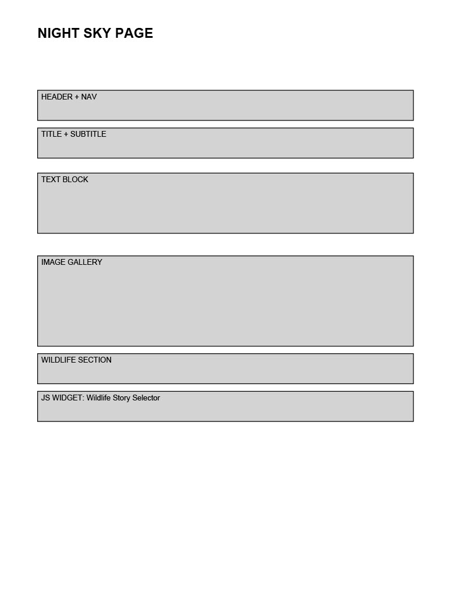

Overview
Purpose
Quiet Skies is a simple, welcoming introduction to backyard astronomy in Alaska. It shows what it’s really like to observe the night sky, the Sun, and the wild outdoors in Alaska’s unpredictable weather. The site blends practical information, personal experience, and calm reflection to help beginners discover the joy of observing the universe from their own backyard.
Audience
This site is designed for beginning astronomers, curious Alaskans, and anyone interested in observing the sky in rural or extreme conditions. The tone is friendly, non-technical, and based on real experience. Visitors may include people who are trying astronomy for the first time, families with telescopes, retired hobbyists, and those who simply enjoy quiet nights, auroras, and the peaceful beauty of the Alaskan sky.
Branding
Website Logo
Style Guide
Color Palette
Palette URL:
https://coolors.co/e5f2c9-212682-73ab84-1e1a1d-edf066| Primary | Secondary | Accent 1 | Accent 2 |
|---|---|---|---|
| #e5f2c9 | #212682 | #1e1a1d | #edf066 |
Typography
Heading Font: Shadows Into Light
Paragraph Font: Ubuntu
Normal paragraph example
I have been collecting telescopes for a couple of decades. This page will share the trials and triumphs of observing the sky in Alaska, from setting up telescopes in blowing snow to waiting patiently for clear nights under the Aurora. The goal is to help others avoid frustration and find peace and joy in the night.
Colored paragraph example
Once you get out of the cities, the skies in Alaska can be incredibly clear. This makes for wonderful viewing opportunities on the right nights.
Navigation
Site Map
Wireframes
Home Page

Solar Page

Night Sky Page
Equipment / Other Links Page

Screenshot of Rough Home Page